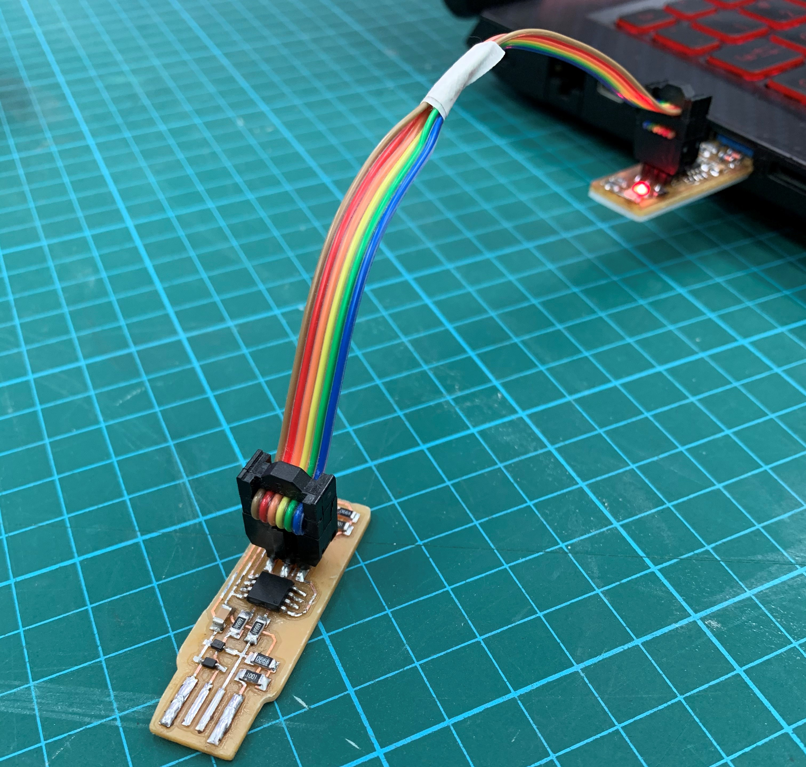
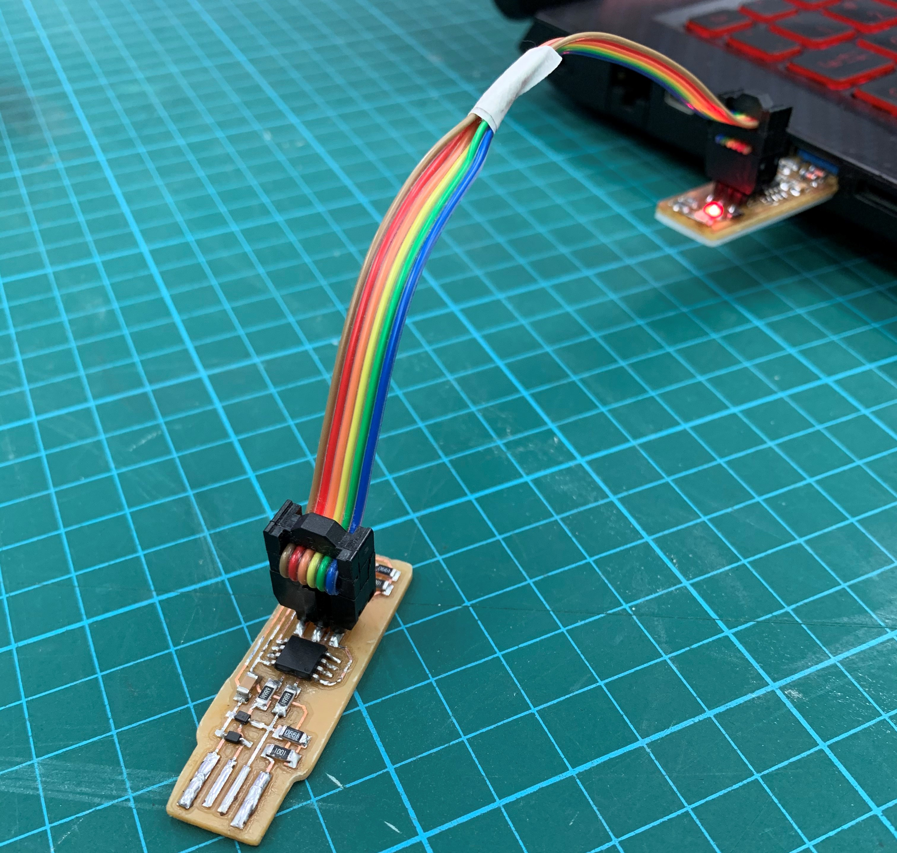
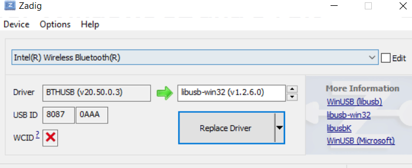

Embedded Programming
After designing and creating our PCB, its time to program it.
After designing and creating our PCB, its time to program it.
Before we can program the main boards, we will need a programmer to connect the board to the computer, this will depend on what microchip you are using:
As I decided to make the ATTINY85 board, I will need to make the ISP programmer.
After cutting out and soldering the board this is what I get:
In order to program this ISP board I made I will need another ISP to program it before being able to use it.
1.First I need to download and install several things:
2.For your computer to recognize and locate the files you will need to Edit environment variable:
a) In start search, type "env" and select "Edit the system Environment variables".
b) Under advanced tab, click "Environment Variables..."
c) Under User variables, locate "Path" and click edit.
d) Click new, and copy-paste the directories of the files from your computer.
3.Connect the Fablab's ISP to the computer and connect the ISP to be programmed using wires. The red LED o both boards should light up.
For your computer to recognise the FabISP, you will need zadig. Open Zadig, ensure the ISP is properly connected and install "libub-win32" driver.
After installing:
4.In the fts_firmware_bdm_v1 file, open the Makefile with a text editor (I used notepad). As I'm using attiny85 I will need to make changes as shown:
In the File explorer, I type "cmd" at the front of the file directory and hit enter, a command prompt will appear.


a) Type "make" and press enter. 3 files should appear in fts_firmware.
.PNG)
.PNG)
b) Type the following commands in this order, every command input you should see the LED light flashing:
make flash
make fuses
make rstdisbl
By now your ISP board is done and ready to use! ＼(＾O＾)／